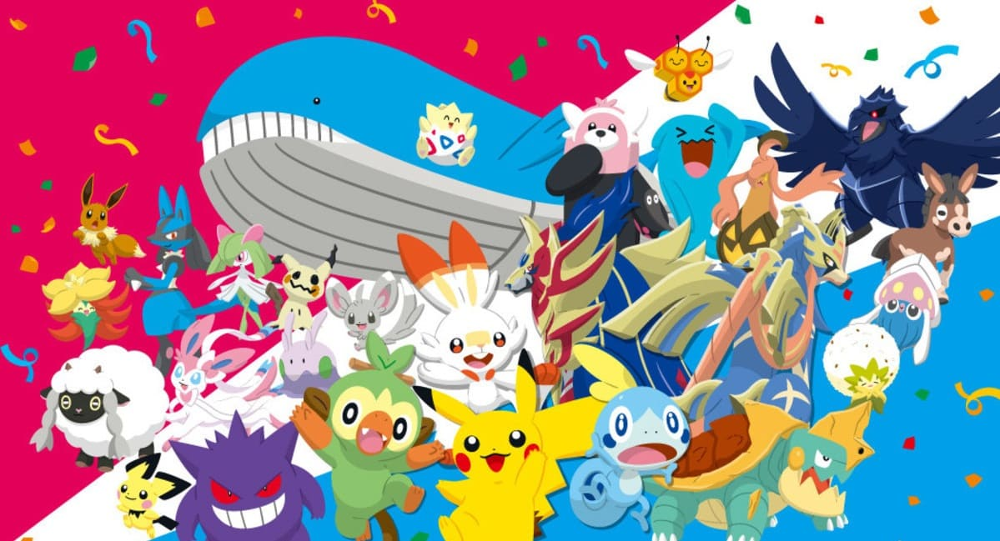
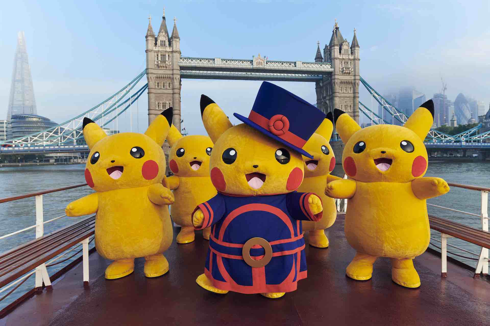

¿Quienes somos exactamente?
A lo largo del año los sitios relacionados con el entretenimiento y los videojuegos recibimos comunicados de algo llamado The Pokémon Company , que nos informa de las noticias más sobresalientes de la franquicia de Nintendo y de sus derivados en otros medios. Pero, ¿qué es exactamente The Pokémon Company ? El sitio Polygon realizó un extenso reportaje sobre ello, y reveló algunas cosas muy interesantes.
Fundada en 1998 en Tokio, Japón, la organización que hoy conocemos como The Pokémon Company fue creada por un acuerdo conjunto entre Nintendo, Game Freak (desarrolladores de los videojuegos) y Creatures (empresa especializada en juegos de cartas) -tres empresas independientes entre sí, dueñas de un tercio de los derechos de los monstruos de bolsillo-, que facultaron a la nueva subdivisión como la responsable de gestionar la marca Pokémon a lo largo del mundo.
The Pokémon Company cuenta con oficinas en Tokio, Nueva York, Washington, Londres y Seúl, mismas que reportan directamente a la oficina central en Japón y entre todas ellas dan trabajo a cerca de 400 empleados a lo largo del mundo. La división neoyorkina, cuyo nombre es The Pokémon Company International, es la que está a cargo de la cuenta oficial de Twitter, la página de Facebook y la web oficial de Pokémon, además de organizar los torneos y ligas oficiales que existen.
El presidente y director ejecutivo de The Pokémon Company, Tsunekazu Ishihara, describe a la compañía como una agencia de representantes: “Nosotros decidimos qué tipos de medios de comunicación son los adecuados para que aparezcan nuestros talentos, como Pikachu y Snivy, así como cuales son las marcas con las que les conviene asociar su imagen”.
De acuerdo con representantes de la empresa, la finalidad de The Pokémon Company es interpretar cuál es la mejor manera en que los diferentes personajes deben de ser entendidos en cada región del mundo. Ellos son los que deciden, por ejemplo, qué partes de la popular animación (que cuenta con emisiones en 160 países) se cortan y cuáles ideas se adaptan de acuerdo a la zona del mundo donde se transmite, así que ya sabes a quién culpar si eras de los que no soportaban a James, el miembro del equipo Rocket que usaba modismos de nuestro país y referencias de la cultura mexicana en la caricatura.
Con respecto a la animación, la junta principal de cada oficina de The Pokémon Company se reúne y decide a qué cadena de televisión o plataforma digital es conveniente cederle los derechos de la serie y, dentro de la empresa, existe un grupo creativo que con base en la retroalimentación de cada sede, marca el rumbo que tomarán las historias de la caricatura. Los mismos creativos son los encargados de cohesionar las marcas de juguetes, ropa y demás mercancía de la mejor forma.
Cada que un nuevo juego de Pokémon está por salir, representantes de The Pokémon Company se reúnen con los desarrolladores de Game Freak para captar la “esencia” del juego y poder transmitirla en el resto de productos asociados, como la música oficial que se puede descargar a través de iTunes, y en los boletines que realizan para comercializar el juego. Por su parte, Nintendo se encarga de la producción en masa y distribución de los títulos.
En cuanto a las tarjetas, The Pokemon Company junto con Creatures tienen que ponerse de acuerdo en la forma en que aparecerán impresas, los dibujos que se usarán y las traducciones a 70 idiomas distintos.
La estrecha colaboración entre las empresas a menudo conduce a la confusión sobre quién está haciendo qué. Todo un proceso complejo para que los fans de los Pokémon puedan disfrutar de Pikachu y sus amigos en los videojuegos, historietas, series de televisión, juguetes y toneladas de mercancía diversa.
